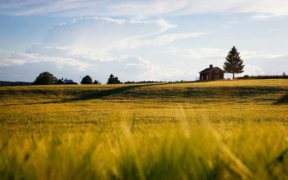
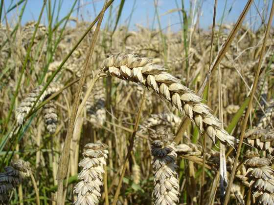
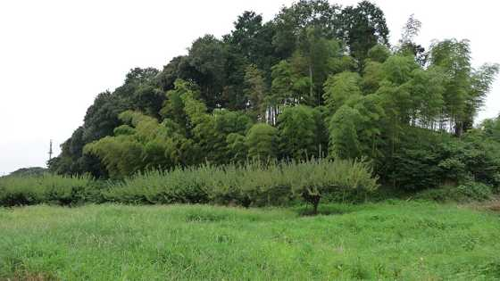
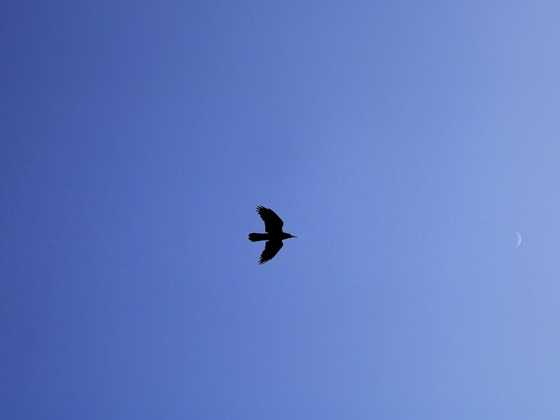
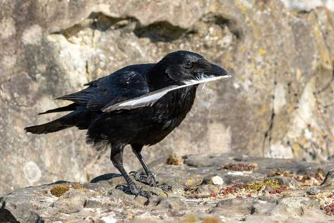
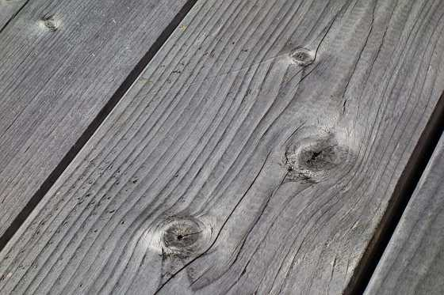
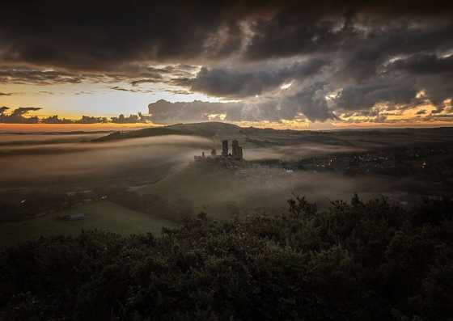

お店の由来・想い

「からすのあしあと」とは、目尻にできるシワのこと。ぱんとおやつを食べて、くしゃっと笑顔になってほしい。そんな思いから、この店名が付けられたそうです。
キャッチフレーズは「からだにもこころにも優しいぱんとおやつ」。国産小麦と十勝産のさくらんぼ酵母を使ったぱんや焼き菓子が紹介されています。
上記は栃ナビ!・食べログ等の掲載情報によるもので、詳細は店のInstagramでご確認ください。




カラスの写真は、店名にちなんだ制作側のイメージです。
メニュー
国産小麦のぱんと焼き菓子のお店です。商品・価格・営業時間・定休日の詳細は準備中です(最新情報はInstagramをご覧ください)。




口コミ(イメージ例)
以下は制作側が作成したイメージ例で、実際のお客様の声ではありません。
イメージ例
やさしい味のぱんで、食べると自然と顔がほころびます。
来店されたお客様(イメージ)イメージ例
小さなお子さんと一緒でも入りやすい雰囲気でした。
ご家族連れのお客様(イメージ)イメージ例
おやつにスコーンを選びました。また立ち寄りたいです。
お散歩帰りのお客様(イメージ)